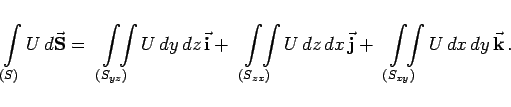
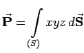

Inhalt Index DeskTop Bronstein

 Vektoranalysis und Feldtheorie Integration in Vektorfeldern Oberflächenintegrale
Vektoranalysis und Feldtheorie Integration in Vektorfeldern Oberflächenintegrale


|  | (13.113) |
| (13.114) |
| = | |||
| (13.115) |
Die Existenzsätze für diese Integrale können in Analogie zu den für Oberflächenintegrale 2. Art angegebenen formuliert werden.
Bei der Berechnung der Zweifachintegrale werden zunächst die Projektionen von S auf die Koordinatenebenen gebildet (s. Abbildung), wobei eine der Variablen x, y oder z durch die beiden anderen mit Hilfe der Flächengleichung für S ausgedrückt werden muß.
Hinweis: Integrale über eine geschlossene Fläche werden durch die Darstellungsweise
| (13.116) |
gekennzeichnet.
| Beispiel A |
|
Es ist  zu berechnen, wobei über das Ebenenstück x+y+z=1 zu integrieren ist, das zwischen den drei Koordinatenebenen eingeschlossen ist. Die obere Seite soll die positive sein: |
| Beispiel B |
|
Es ist über das gleiche Ebenenstück wie in Beispiel A zu integrieren: |
| Beispiel C |
|
Es ist |